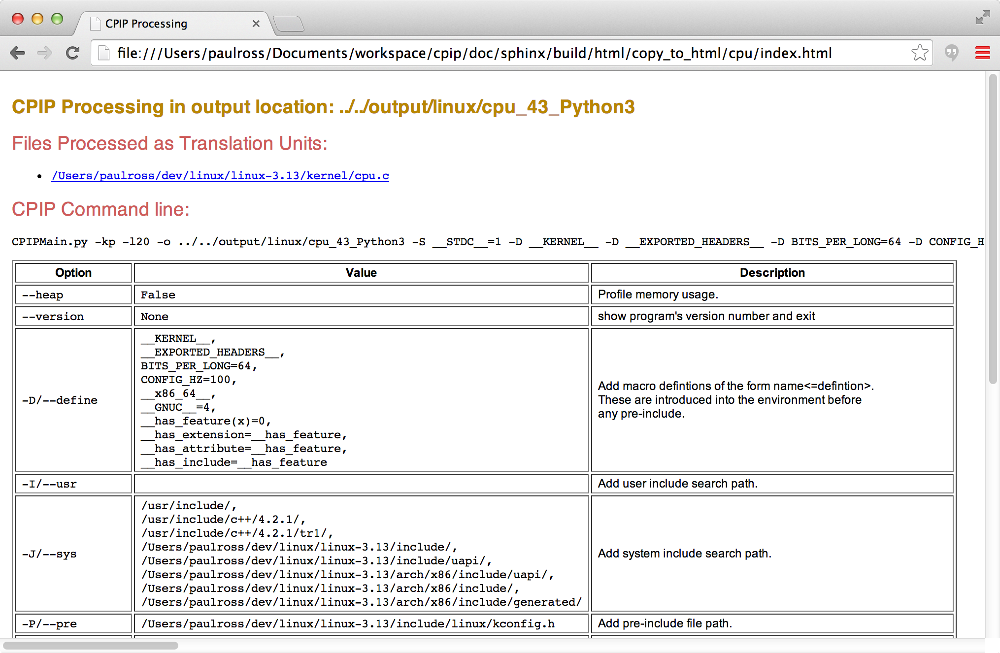
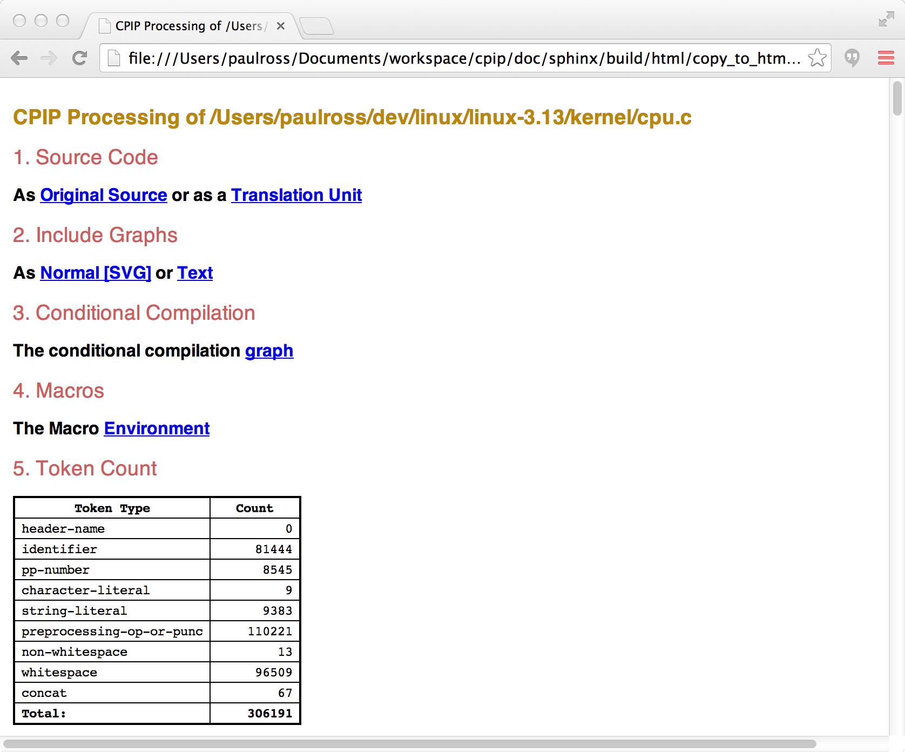
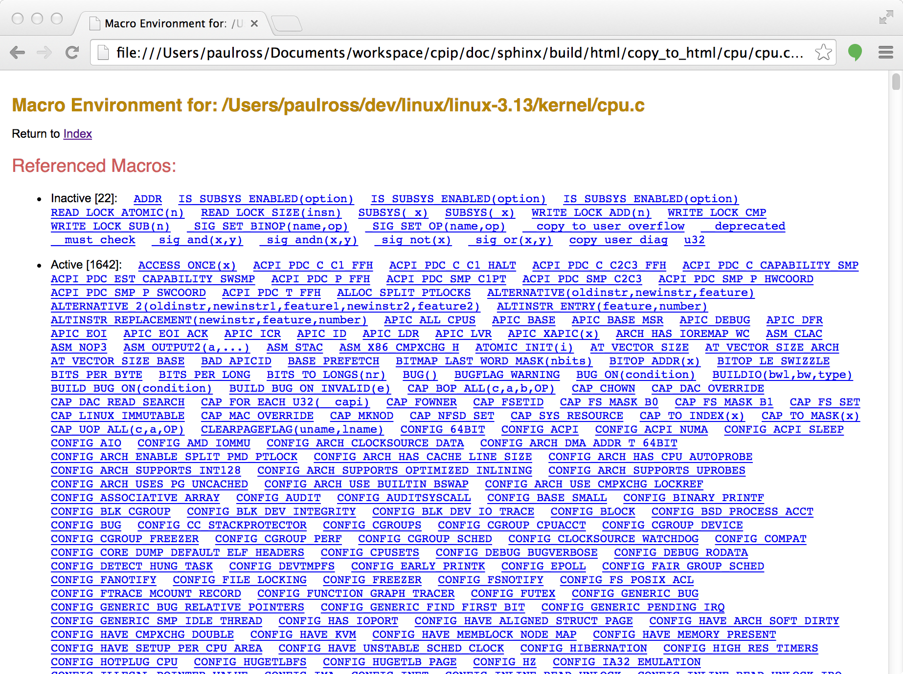

CPIPMain.py Examples¶
Screenshots¶
This section shows some screenshots of CPIPMain.py‘s output. Some Real Examples are shown below.
CPIPMain.py produces a set of HTML and SVG pages for each source file preprocessed. As well as the Translation Unit CPIPMain.py generates information about the three important tasks for a preprocessor: file inclusion, conditional compilation and macro replacement.
Home Page¶
The index.html shows the list of files preprocessed in this pass (linked to file specific pages).
It also shows the command line used and an explanation from the CPIPMain.py help system as to what each option means.
For example:
Each in the list of files preprocessed in this pass is linked to file specific page.
File Specific Pages¶
These describe the results of preprocessing a single file, it contains links to:
- The final translation unit.
- The results of file inclusion.
- The results of conditional compilation.
- Macro processing results.
- The total token count.
- What files were included and how many times.
The top of the page includes links to these sections (described in detail below):
Further down the page is a table showing what files were included and how many times:

Translation Unit & Original File¶
Translation Unit¶
The preprocessed file and all its #include‘s become a Translation Unit which CPIPMain.py represents as an HTML page.
Each #include statement is represented in a nested fashion, any source code in the translation unit is presented syntax highlighted. The syntax is, of course, the C pre-processor language thus both typedef and char are pre-processor identifiers even if later on typedef is seen as a C keyword.
The numbered links thus [ 19] are to an HTML representation of the orignal source code file/line.
The other navigational element present is when the file path is the file being pre-processed a forward link is there to to the next part of this file, thus skipping over intermediate #include‘d code.

Original File¶
All processed source code (original file and and included files) is presented as syntax highlighted HTML.
The syntax is the C pre-preprocessor language. Macro names are linked to their definition in the Macro Definitions page.

The SVG Include Graph¶
The file specific page offers a link to an SVG visualisation of the file include graph.
The Overall Picture¶
The diagram represents a tree with the root (the file being preprocessed) at center left. Increasing include depth is left-to-right and source code order (i.e. #include order) is top to bottom.
A special case is that the may be a file "Unnamed Pre-Include" at the top left and joined to the preprocessed file with a thick light grey line. This ‘virtual’ file contains the macro declarations made on the CPIPMain.py command line.
Each file is represented by a fixed width block, the depth is proportional to the number of preprocessing tokens produced by a file (and its #include‘s). Cyan coloured blocks represent files that are included but contain no effective content, probably because their header guards use conditional compilation to prevent re-inclusion.
The diagram looks like this:

A Detailed Look¶
Zooming in to a part of the diagram reveals a host of new information. This example (in the center of the diagram above) and represents the arch/x86/include/asm/bitops.h file.
In this picture the arch/x86/include/asm/bitops.h file is represented on the left and the files that it #include‘s to its right.

File Path¶
Many parts of this diagram can display additional information on a mouse over. For example mousing over the file name above the box shows the the absolute path of the file as a pop-up yellow block:

How it was Included?¶
Moving the mouse over the ? to the left of the block reveals a host of information about the file inclusion process:

This pop-up yellow block contains the following:
- Inc: Where this was included from. This arch/x86/include/asm/bitops.h file is included from line 23 of the kernel/bitops.h file.
- As: Why it was included. This is the current state of the conditional compilation stack.
- How: How this file was included. This string starts with the text that follows the #include statement, in this case <asm/bitops.h>. This is followed by the search results, in this case this file was found by searching the system includes (sys=) and was found in arch/x86/include. There may be more than one search made as fallback mechanisms are used and a failure will be shown with None. For example usr=None sys=spam/eggs means that the user include directories were searched first and nothing came up, then the system include directories were searched and the file was found in spam/eggs.
Token Types¶
If you are interested in what types of preprocessor tokens were encountered than there is a host of information available to you. On the left hand side of each file block is a colour coded histogram of token types. If the file includes others then there will be two, the left hand one is for the file, the right hand one is for all the files it includes. Hovering over the ? in either histogram pops up the legend thus:

The actual count of tokens is seen when moving the mouse over the left of the three ? characters within the box. There are two columns, the first is for all tokens and the second is for significant tokens, that is those that are not conditionally excluded by #if etc. statements:

Similarly the token count for the files this file includes:

And the combined token count:

Conditional Compilation¶
One tricky area for comprehending source code is understanding what code is conditionally compiled. Looking at a source file it is not immediately obvious which #if etc. statements are actually being processed.
As an aid CPIP produces an HTML page that is the translation unit with only the conditional compilation statements, what is more they are nested according to their logical execution condition and colour coded according to the resolved state; green means code will be part of the translation unit and red means those statements will be ignored. The links in the (artificial) comment following the statement are to the HTML representation of the file where the statement occurs.
Here is an example:
Macro Definitions¶
CPIP retains all information about marcos during preprocessing and the file specific page containing macro information starts like this:
The contents starts with a list of links to macro information further down the page; the first set of links is alphabetical to all macros that are declared, even if they are not used. The second set is to any macros that are actually used in pre-processing this file.
These are all linked to the main macro table further down the page that looks like this:

The table has the following columns:
- Macro name and its definition, this is on bold if the macro has been referenced.
- Where the macro was defined (NOTE: macros can be redefined and that would happen in a different place). This is linked to the source file.
- The reference count for the macro i.e. how many times the pre-processor was required to invoke the definition. This is linked to further down the page where the actual invocations are identified (see below).
- A boolean that says whether the macro is still defined at the end of procession the translation unit.
As an example let’s look at BITS_TO_LONGS(nr). Here is the macro table entry:

A link in the second column takes you to an HTML rendition of the file where the macro is defined.
A link in the third column takes you down the page to a summary of where the macro was referenced.

Each link in that table takes you to the source code that referenced this macro. For example take BITS_TO_LONGS(nr) and the file linux_2.6.37/kernel/cpu.c there are a seven references which are of the form line-column. The link to 508-53 goes to here:

A Most Powerful Feature¶
CPIP’s knowledge about macros and its ability to generate linked documents provides an especially powerful feature for understanding macros.
Some Real Examples¶
CPIPMain is a command line tool that you can invoke very much like your favorite pre-processor. CPIPMain produces a number of HTML pages and SVG files that make it easier to understand what is happening during preprocessing. This section shows some examples of the kind of thing that CPIP can do.